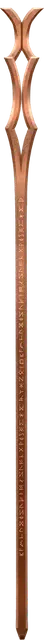

Посох магов
Staff of the Magi
Посох, легендарный (требуется настройка Волшебником, Колдуном или Чародеем)

Рекомендованная стоимость от 50 001 зм
Этот посох можно использовать как магический боевой посох, предоставляющий бонус +2 к броскам атаки и урона им. Держа его, вы получаете бонус +2 к броскам атаки заклинаниями.
У посоха есть 50 зарядов для описанных ниже свойств. Он ежедневно восстанавливает 4к6 + 2 заряда на рассвете. Если вы истратили последний заряд, бросьте к20. Если выпадет «20», посох восстановит 1к12 + 1 заряд.
Впитывание заклинаний. Пока вы держите посох, вы совершаете спасброски от заклинаний с преимуществом. Кроме того, вы можете использовать реакцию, когда другое существо накладывает заклинание, целью которого являетесь только вы. Если вы это делаете, посох впитывает магию этого заклинания, отменяя его эффект и восстанавливая количество зарядов, равное уровню поглощённого заклинания. Однако если из-за этого сумма зарядов в посохе превысит 50, посох взорвётся, как если бы вы активировали его «карающий удар» (смотрите ниже).
Заклинания. Если вы держите этот посох, вы можете действием потратить часть зарядов, чтобы наложить им одно из следующих заклинаний, используя вашу Сл спасброска против заклинания и базовую характеристику: град [ice storm] (4 заряда), молния [lightning bolt] (версия 7-го уровня, 7 зарядов), невидимость [invisibility] (2 заряда), огненная стена [wall of fire] (4 заряда), огненный шар [fireball] (версия 7-го уровня, 7 зарядов), открывание [knock] (2 заряда), паутина [web] (2 заряда), призыв элементаля [conjure elemental] (7 зарядов), пылающий шар [flaming sphere] (2 заряда), рассеивание магии [dispel magic] (3 заряда), создание прохода [passwall] (5 зарядов), телекинез [telekinesis] (5 зарядов) или уход в иной мир [plane shift] (7 зарядов).
Вы также можете действием наложить посохом одно из следующих заклинаний, не тратя зарядов: волшебная рука [mage hand], волшебный замок [arcane lock], защита от зла и добра [protection from evil and good], обнаружение магии [detect magic], свет [light] или увеличение/уменьшение [enlarge/reduce].
Карающий удар. Вы можете действием сломать посох о колено или твёрдую поверхность, совершая, таким образом, карающий удар. Посох уничтожается, испуская оставшуюся в нём магию взрывом, заполняющим сферу радиусом 30 футов с центром на нём.
У вас есть 50-процентный шанс мгновенно перенестись на случайный план существования, избежав взрыва. Если вы его не избегаете, то получаете урон силовым полем, равный 16 × количество зарядов в посохе. Все другие существа в области взрыва должны совершить спасбросок Ловкости Сл 17. При провале существо получает урон, зависящий от того, как далеко оно находится от исходной точки взрыва, как показано в таблице. При успехе существо получает половину этого урона.
| Расстояние от исходной точки | Урон |
| 10 футов или ближе | 8 × количество зарядов в посохе |
| от 11 до 20 футов | 6 × количество зарядов в посохе |
| от 21 до 30 футов | 4 × количество зарядов в посохе |